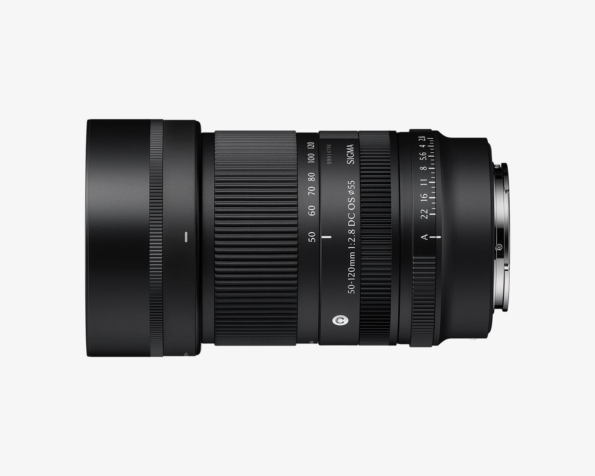

科技產品 T1
官方產品素材，非本站實測。 Amazon
Amazon 推出 Alexa Tablet 新系列，首次完整支援 Google Play 並開放訂購
發佈時間
Amazon／Alexa Tablet 12 Pro、11、8
Amazon 新平板搭配 Android、Google Play 與 Alexa+，高階款加入高更新率螢幕及霧面選項。
- 12 Pro 起價 US$499.99，霧面版本 US$549.99；11 與 8 分別 US$329.99、US$229.99。
- 美、加、墨預定 10/14 出貨；英、德、法、義、西 10/19。螢幕內容 AI 功能預設關閉，須主動開啟。
完整報告收合報告
事件背景與影響
從受限的應用商店走向完整 Android 生態，能改變平板的工作與娛樂用途；但軟體支援及 AI 可用地區仍是選購關鍵。
事件與發佈依據
官方公告 metadata 首次發布 2026-10-08T12:55:12.507Z；10/8 開放訂購，不把出貨日寫成發布日。
收錄紀錄
9/25–10/8 日報窄化查詢及同窗產品表均無這次 Alexa Tablet 系列推出事件。
尚待確認
價格為公告市場美元價，不代表台灣上市；配件及地區支援須另查。不能把新系列推出推論成所有舊 Fire 裝置停止支援。
相關實體與概念
Amazon、Alexa+、Android、Google Play、隱私、平板
科技產品 T2
Google 公布 Gemini 通用工作代理，整合企業工具與多種工作任務
發佈時間
Google Cloud／Gemini agent
新代理把企業知識查詢、內容製作與程式工作整合到同一提示介面，並連接既有業務系統。
- 官方描述代理可規劃工作、使用技能及工具，並把結果帶回文件、信箱與開發環境。
- 提供模型選擇、成本控制及企業管理治理；這些是廠商產品描述，不是本站實測。
完整報告收合報告
事件背景與影響
企業導入的瓶頸不只是模型回答能力，還包括資料權限、工具串接與成本管理；能否安全完成工作，比單次生成更重要。
事件與發佈依據
Google Blog 當日 Gemini at Work 公告；Cloud 詳文 metadata 為台灣 10/9 03:00:11，兩者皆在科技窗內。
收錄紀錄
最近14日日報與同窗表無此通用代理事件；不同於舊 Gemini Enterprise 平台或既有 Live Avatar。
尚待確認
不把「宣布」寫成所有企業已全面開通。費率、個別功能權限及區域推出狀態需依服務文件確認。
相關實體與概念
Google Cloud、Gemini、企業代理、工具使用、資料治理
科技產品 T3
Google Drive 與 Docs 開始原生預覽、編輯及協作 Markdown 檔案
發佈時間
Google／Drive、Docs
.md 與 .markdown 可以在 Drive 預覽、直接於 Docs 編輯與共同作業，不必先轉成另一種文件格式。
- 支援格式化預覽、多人即時協作與留言，仍保留 Markdown 檔案。
- Workspace 與個人帳戶均列入推出範圍，Rapid／Scheduled Release 自 10/5 漸進推出，最長約15天。
完整報告收合報告
事件背景與影響
技術文件及 AI 工作流程常用 Markdown；保留原始檔型別，可減少跨工具轉換造成的版本混亂。
事件與發佈依據
Workspace Updates 的 October 5 公告及 Rollout pace 段落；不是 10/8 媒體重述日，也不是 2024 匯入／匯出功能。
收錄紀錄
最近14日日報查 Drive、Docs、Markdown 無命中；同窗產品表無此次原生編輯事件。
尚待確認
分批推出不代表所有帳戶當天可用；不同編輯器對特殊 Markdown 語法的相容性仍需實測。
相關實體與概念
Google Drive、Google Docs、Markdown、協作、文件格式
科技產品 T4

官方產品素材，非光學效能實測。 Sigma
Sigma 發布 50–120mm F2.8 APS-C 望遠變焦鏡，預定十月下旬上市
發佈時間
Sigma／50-120mm F2.8 DC OS Contemporary
APS-C 用 F2.8 恆定光圈望遠鏡補齊 Sigma 輕量變焦系列，提供 Sony E、Fujifilm X 與 Canon RF 接環。
- 官方列10/22上市；Sony E版重390克、全長99毫米，不能直接套用所有接環版本。
- 官方防手震測試為廣角端6.5級、望遠端4.5級；防塵防滴設計不等於防水。
完整報告收合報告
事件背景與影響
小型系統的望遠端也能維持較大光圈，便於人像及活動拍攝；但接環與片幅限制需要先確認。
事件與發佈依據
Sigma 日本新聞稿 2026.10.08，正式發布與10/22上市分開記錄。
收錄紀錄
最近14日日報窄查 Sigma 與50–120mm無命中，同窗表無同款推出事件。
尚待確認
日本公告採開放價格；台灣媒體報價須再以當地通路確認。光學表現與防手震級數為官方測試，非本站測試。
相關實體與概念
Sigma、APS-C、F2.8、光學防手震、鏡頭接環
科技產品 T5
Codex 桌面版開始推出更快的跟進指令回應，讓執行中的任務更快轉向
發佈時間
OpenAI／Codex in ChatGPT desktop
在 Codex 工作途中補充或修正方向，系統可更快回應新的指令。
- 更新採分批推出，對象為 ChatGPT 桌面應用內的 Codex。
- Settings → General → Follow-up behavior 可選擇跟進訊息影響目前工作，或等待下一次執行。
完整報告收合報告
事件背景與影響
長任務中及早糾正方向可減少無效工作，但仍需要使用者說清楚新要求是否取代原目標；這項更新不等於自動續跑或配送保證。
事件與發佈依據
ChatGPT release notes 的 October 8「Faster steering in Codex」段落，不沿用整頁更新時間。
收錄紀錄
最近14日日報查 Codex 與 steering／跟進／引導無命中，同窗表無這次行為更新。
尚待確認
官方沒有提供各裝置確切開通時刻或速度基準；不宣稱已替使用者帳戶驗證。
相關實體與概念
OpenAI、Codex、steering、任務協作、跟進指令
全球焦點 1
續報｜克拉馬托爾斯克巴士遭襲造成重大傷亡，烏克蘭電力壓力持續
發佈時間
AP 報導巴士攻擊死亡30人；其他報導出現33人，統計時點不同，未合併成單一確定數字。
- 攻擊發生於10/8，基輔同時面臨停電壓力。
- 不把昨天基輔空襲的死傷加入今日巴士數字。
完整報告收合報告
事件背景與影響
交通與能源設施風險直接影響平民生活；傷亡數字仍需追蹤更新並保留來源歧異。
事件與發佈依據
AP 首次發布07:49:30 UTC；10/8巴士攻擊為新的地點及傷亡事件。
收錄紀錄
10/8已收錄10/7基輔空襲；今日新增克拉馬托爾斯克公共巴士遇襲，不重列昨天攻擊。
尚待確認
傷亡統計可隨救援變動；交戰方主張不等於獨立調查結論。
相關實體與概念
烏克蘭、俄羅斯、克拉馬托爾斯克、平民保護、電力
全球焦點 2
美國暫停 Microsoft 等企業參與綠卡勞工認證程序，企業與政府說法分歧
發佈時間
美方指控相關企業濫用制度；Microsoft 提出不同說法。這是綠卡勞工認證程序，不能寫成全面取消 H-1B。
- 當日措施涉及 Microsoft 等企業的 skilled foreign worker 綠卡程序。
- 公司反駁政府對申請用途的描述，爭議尚未定論。
完整報告收合報告
事件背景與影響
招募與員工身分規劃可能受影響，但行政指控、程序暫停及司法定罪必須分開。
事件與發佈依據
AP 14:34:35 UTC 報導當日政府執行措施。
收錄紀錄
前14日日報窄查 green card／綠卡未收錄此暫停措施。
尚待確認
不可推論所有外籍員工簽證立即失效；個人案件需依主管機關文件處理。
相關實體與概念
美國、Microsoft、PERM、移民、H-1B
全球焦點 3
Anne Carson 獲得諾貝爾文學獎，古典與當代跨文類作品獲肯定
發佈時間
瑞典學院宣布加拿大作家 Anne Carson 得獎，肯定她以古典傳統創造當代文學新形式。
- Carson 的創作融合古典文學與當代形式。
- 獎項表彰其整體創作，不是只獎勵一本書。
完整報告收合報告
事件背景與影響
得獎凸顯詩、散文與翻譯之間的界線可以被重新探索，也將提升作品的國際能見度。
事件與發佈依據
瑞典學院當日文學獎結果；不把 AP 預先建立頁面的06:47:28 UTC誤作宣布時刻。
收錄紀錄
前14日日報未收錄此次文學獎結果；前兩天其他獎項不是同一事件。
尚待確認
來源只有日期，保留日期顯示；不由搜尋頁時間推造精確宣布秒數。
相關實體與概念
Anne Carson、瑞典學院、加拿大、詩、翻譯
全球焦點 4
Isaias 增強為二級颶風，美國墨西哥灣沿岸加緊撤離準備
發佈時間
Isaias 達二級颶風，預測威脅美國墨西哥灣沿岸；截至截點仍是預測，不是已經登陸。
- AP 列最大持續風速約每小時155公里。
- 佛州狹長地帶、阿拉巴馬與密西西比沿岸準備應對。
完整報告收合報告
事件背景與影響
撤離決策需提前於強風及海水上升；路徑可能改變，讀者應以最新官方警報為準。
事件與發佈依據
AP05:37:27 UTC 滾動報導；10/8增強與當日撤離準備是本次事件依據，首次頁面時間不等於升級精確時刻。
收錄紀錄
前14日日報查 Isaias 無命中。
尚待確認
預報不是保證路徑；不沿用此凍結日報作即時避難指引。
相關實體與概念
Isaias、颶風、撤離、墨西哥灣、風暴潮
全球焦點 5
英國東耶路撒冷領事機構降級，英以對是否關閉表述不同
發佈時間
領事機構改為任務機構並縮減人員；以方稱領事館終止，英方則稱仍會服務巴勒斯坦人。
- 報導列20名外交人員離開、7人留下。
- 「降級」與「建築完全關閉」不是同一說法。
完整報告收合報告
事件背景與影響
外交職能及人員配置實際改變，比政治口號更直接影響領事服務與雙邊關係。
事件與發佈依據
AP07:57 UTC當日滾動頁中的英國領事館段落；不把頁面其他中東更新混入。
收錄紀錄
前14日日報未收錄此次機構降級執行。
尚待確認
保留英以用語差異；具體服務能力仍需機構公告確認。
相關實體與概念
英國、以色列、東耶路撒冷、領事服務、巴勒斯坦
全球焦點 6
續報｜緬甸領導人與馬來西亞總理正式會談，訪問進入外交協商階段
發佈時間
敏昂萊與安華會面尋求加強關係；軍方支持的政治體制及人權爭議仍是外交背景。
- 會談發生於10/8，屬這次訪問的新正式活動。
- 不把舊遣返批次計入今日新增措施。
完整報告收合報告
事件背景與影響
從抵達轉入正式協商是可驗證新階段，但接觸不等於爭議消失或已有具體安全保障。
事件與發佈依據
AP06:27:15 UTC報導10/8與安華正式會談。
收錄紀錄
10/8日報已收錄抵達吉隆坡；今日新增正式會談，不再把抵達或先前遣返數字當新事實。
尚待確認
會談成果及後續執行需要官方文件；本篇不宣稱已達成新的遣返協議。
相關實體與概念
緬甸、敏昂萊、馬來西亞、安華、外交、人權
全球焦點 7
續報｜巴黎學生封校抗議再與警方衝突，教育資源訴求持續
發佈時間
學生要求改善教育資源，10/8的封校及示威引發新一輪衝突。
- 巴黎 Hélène Boucher 學生以垃圾桶阻擋入口，警方使用催淚氣體。
- 不把自9月累計逮捕人數誤寫成今天逮捕人數。
完整報告收合報告
事件背景與影響
教育資源分配與公共秩序之間的張力持續；應區分當日行動與數週累計統計。
事件與發佈依據
AP09:16:51 UTC報導10/8 Hélène Boucher學校等抗議及警方處置。
收錄紀錄
10/2已收錄學生抗議與政府危機會議；今日新增具體封校、警方施放催淚氣體與巴黎集會。
尚待確認
各地情況不同，不能從一所學校的衝突概括所有抗議者或警方行動。
相關實體與概念
法國、巴黎、教育預算、學生抗議、公共秩序
全球焦點 8
英德領導人在柏林討論反破壞與資安合作，強化威脅資訊分享
發佈時間
英國首相 Burnham 與德國總理 Merz 討論資安及反破壞合作，俄羅斯相關威脅與歐洲關係列入議程。
- 合作重點包括網路威脅、破壞活動及資訊分享。
- 報導稱預期處理既有 Kensington Treaty 程序，不能當成已完成所有批准。
完整報告收合報告
事件背景與影響
資訊分享與協調回應可增進關鍵基礎設施韌性，但政治承諾仍需要制度及執行資源支撐。
事件與發佈依據
Euronews metadata 10:22:46+02:00，為10/8柏林會談與合作議程。
收錄紀錄
前14日日報查 Burnham、Berlin 與資安組合未收錄此次會談。
尚待確認
這不是英國重新加入歐盟；條約與政策實施進度須分開追蹤。
相關實體與概念
英國、德國、Burnham、Merz、資安、關鍵基礎設施
全球焦點 9
伊斯坦堡七層樓建築局部倒塌，救援隊搜尋受困者
發佈時間
Maltepe 建築下方樓層倒塌，報導時2人死亡、8人獲救、仍有2人受困。
- 七層建築的下方三層倒塌，上層與周邊住戶撤離。
- 死傷與受困數字為報導時點，救援仍在進行。
完整報告收合報告
事件背景與影響
剩餘結構與鄰近建築風險同樣重要，救援需防範二次倒塌；原因必須由調查確認。
事件與發佈依據
AP07:05:50 UTC報導10/8黎明前倒塌。
收錄紀錄
前14日日報查 Maltepe／伊斯坦堡倒塌未收錄此事故。
尚待確認
原因未定，不自行歸因地震、施工或材料；後續統計可能改變。
相關實體與概念
土耳其、伊斯坦堡、Maltepe、建築安全、救援
全球焦點 10
10/8當日濺落照片。 NASA / Keegan Barber
SpaceX Crew-12 在洛杉磯外海安全濺落，四名太空人返回地球
發佈時間
Crew-12 完成約七個月任務，在太平洋安全返回，回收及醫療檢查隨後進行。
- Jessica Meir、Jack Hathaway、Sophie Adenot、Andrey Fedyaev 共4人返回。
- NASA列在軌237天；太空站停留與全程在軌天數不能混用。
完整報告收合報告
事件背景與影響
定期載人往返支撐太空站科學與運作；成功返回也提供長時間飛行及健康研究資料。
事件與發佈依據
NASA即時博客11:36 EDT發布；實際濺落11:34 EDT，即台灣23:34。
收錄紀錄
前14日日報未收錄這次實際返回；較早離站預告不作今日事件。
尚待確認
成功濺落不取代後續健康評估；尚未進行的記者會不寫成已發生。
相關實體與概念
NASA、SpaceX、Crew-12、Dragon、ISS、ESA
研究備註
時間、來源與後續追蹤
研究截點 2026-10-09 08:00:37（Asia/Taipei）
研究時間與範圍
研究截點：2026-10-09 08:00:37（Asia/Taipei）。全球新聞：2026-10-08 08:00:37 至 2026-10-09 08:00:37（Asia/Taipei）。科技產品：2026-09-25 08:00:37 至 2026-10-09 08:00:37（Asia/Taipei）。